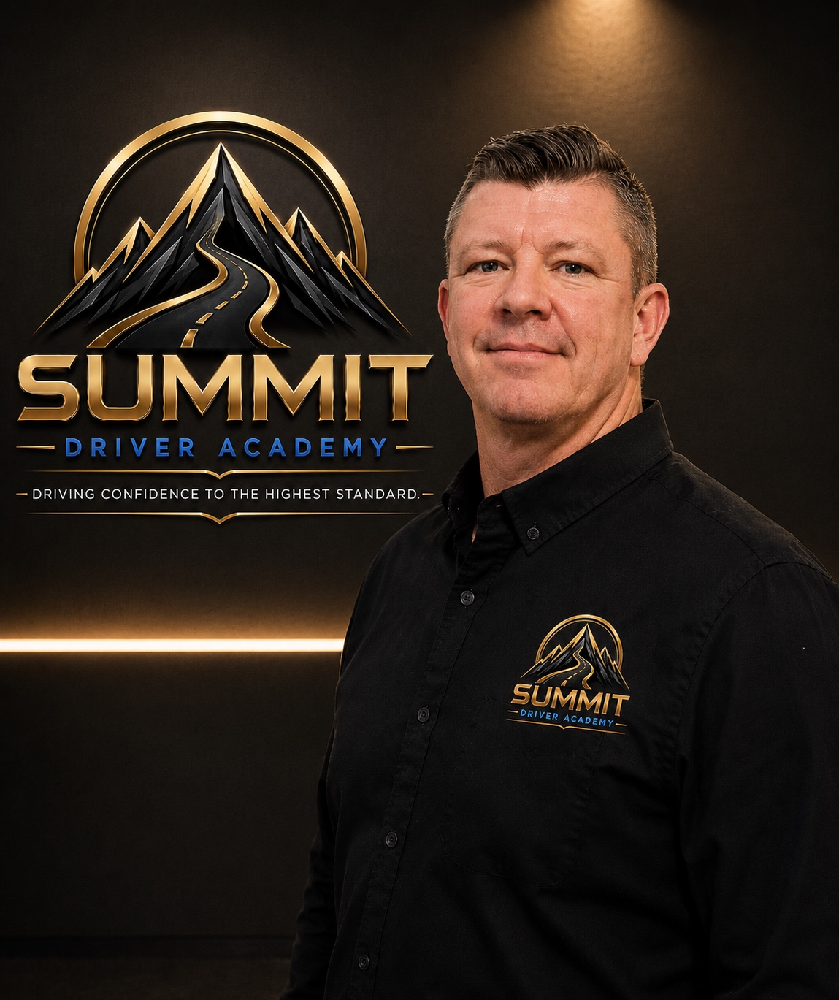

More than road-test preparation. Summit develops calm, capable and defensive drivers for life through premium coaching, measurable progress and one consistent standard.
Founding 30 availability— of 30 places remaining
Checking live availability…
About Summit Driver Academy
Built from a parent’s perspective.
Clear communication, visible progress and a higher standard of driver education for every family.
Summit Driver Academy began with a parent’s experience.
While my daughter was completing driver education, I found it difficult to understand how she was progressing, what skills she was working on and whether she was truly becoming a confident, prepared driver. Communication was limited, and I often felt disconnected from an important part of her education.
I created Summit Driver Academy because families deserve better visibility, clearer communication and greater confidence in the training their young drivers receive.
A higher standard of driver education
Summit was built around a simple belief: passing the road test should not be the only measure of success.
Our goal is to develop calm, capable and responsible drivers who can recognize risk, make sound decisions and respond confidently in real-world conditions. Every student receives patient, structured instruction guided by consistent teaching standards.
Progress families can understand
Students and families should never be left wondering what has been completed or what comes next.
Summit combines professional instruction with documented progress, clear instructor feedback and digital tracking. This creates accountability for our instructors, clarity for families and a more focused learning experience for every student.
Local leadership and personal accountability
Summit Driver Academy is locally owned and built to serve Russell and surrounding communities. We are not a distant franchise or an anonymous online platform.
Our reputation will be earned one student and one family at a time. We take personal responsibility for the quality, consistency and professionalism of every Summit experience.
Meet the Team
Professional leadership. One consistent Summit standard.
Patient instruction, clear expectations and coaching designed for real-world driving.

Jason St. Louis
Senior Road Instructor & Operations Partner
A local Russell resident and former professional MMA athlete, Jason St. Louis brings discipline, focus and years of coaching experience to driver education. His calm, professional approach helps students build safe driving habits, lasting confidence and sound decision-making behind the wheel.
As Senior Road Instructor & Operations Partner, Jason helps oversee instructor standards, student progress and the consistency of the Summit experience.
Karen St. Pierre
Road Instructor
A longtime Russell resident, Karen St. Pierre brings extensive professional driving experience to Summit Driver Academy. Her background as a school bus driver has given her a strong understanding of safety, responsibility, awareness and calm decision-making on the road.
As a professional MTO-certified driver education instructor, Karen is committed to providing patient, structured instruction that helps students develop safe driving habits, practical skills and lasting confidence behind the wheel.
30Hours online training
10Accelerated in-car training · completed over 5 days
A complete 40-hour Beginner Driver Education program, delivered through one connected Summit experience.
The planned program includes 20 hours of online classroom instruction, 10 hours of flexible online instruction and 10 hours of private in-car training, subject to final MTO approval.
MTO approval pending. Pre-registration is open. No payment is collected until final approval is received.
Why Approved BDE Training Matters
Practical benefits that extend beyond the road test.
Once Summit receives final MTO approval, students who successfully complete the approved program may qualify for the benefits below.
04
Take the G2 Test Up to 4 Months Earlier
Graduates of a government-approved Beginner Driver Education course may take their first road test after eight months instead of the standard twelve-month waiting period.
10%
Potential Auto-Insurance Savings
Many insurers offer a driver-training discount to new drivers who complete a recognized program. Savings may be available up to 10%, but eligibility and the amount vary by insurer and individual policy.
30
Structured Online Learning
Thirty hours of guided online learning are planned as part of the Summit Path™: 20 hours of classroom instruction plus 10 hours of flexible instruction, subject to final MTO approval.
Insurance discounts are not guaranteed. Families should confirm eligibility and savings directly with their insurance provider.
Founding 30 Program
Reserve one of Summit’s first 30 student places.
Join the pre-registration list today. After final MTO approval, the first 30 eligible students contacted in registration order will be offered founding tuition of $900 + applicable taxes. Regular tuition after the Founding 30 is $1,200 + applicable taxes.
No payment today
No obligation before approval
Places assigned in pre-registration order
Founding tuition$900+ applicable taxesRegular tuition after Founding 30: $1,200
Pre-registration only · Subject to final MTO approval
Limited Founding Offer— of 30 Founding places remaining
Checking live availability…
Eligible students will be contacted in pre-registration order after final MTO approval.
The Summit Path™
One complete premium program. Every step connected.
From early online preparation through final road-test coaching, the Summit Path™ creates a clear, accountable journey for students and families.
01
30 Hours Online
20 hours of classroom instruction plus 10 hours of flexible instruction, subject to final MTO approval.
02
Accelerated 10-Hour In-Car Training
Private, one-on-one instruction completed over five focused days.
03
Digital Progress Tracking
Summit Score™ updates, lesson reports and family visibility after every session.
The Summit Standard™
A consistent standard for every student, every lesson, every instructor.
The vehicle is only a tool. The real Summit difference is the quality, accountability and consistency of the training experience.
01
Private Coaching
One-on-one instruction tailored to each student’s pace, confidence and current skill level.
02
Measurable Progress
Summit Score™ evaluations and Road Test Readiness tracking replace vague feedback.
03
Family Visibility
Digital lesson reports, instructor comments and clear next steps keep families informed.
04
Real-World Readiness
Defensive driving, sound judgement and calm decision-making—not memorized test routes.
The Summit Standard™ is not a single lesson. It is our commitment to delivering the same exceptional experience to every student, every time.
Roadmap to Success
A clear path from preparation to confident independence.
See the technology supporting students and families.
These sample previews demonstrate the planned experience. Live information remains protected inside secure, role-based accounts.
Parent DashboardSample Preview
Stay informed without chasing updates.
Summit Score™88%
Road Test Ready91%
Lesson 4 completed
Instructor comments posted
Next lesson: Tuesday, 5:00 PM
Student DashboardSample Preview
Know what is improving and what comes next.
In-car hours8 / 10
Online course24 / 30
Current focus: consistent shoulder checks before lane changes.
Why Families Choose Summit Driver Academy
Premium is not a label. It is what families can see, measure and trust.
Summit Driver Academy
Typical Driving School
Private, one-on-one instruction
May vary by school or instructor
Summit Score™ progress tracking
Basic checklist or verbal feedback
Parent and student dashboards
Often unavailable
Digital lesson reports after sessions
Handwritten notes or limited updates
Road Test Readiness meter
Subjective readiness opinion
One consistent Summit Standard™
Experience may differ by instructor
The Summit Promise
We do not measure success by how many students pass a road test. We measure success by how confidently they drive for the rest of their lives.
Frequently Asked Questions
Straight answers before you enrol.
When can my child begin?
Program access and in-car instruction will begin only after Summit receives final MTO approval and the student meets all applicable licensing and eligibility requirements.
What is included in the $1,200 program?
The Summit Path™ includes 30 hours of online learning, accelerated 10-hour private in-car training completed over 5 days, Summit Score™ tracking, digital progress reports and Road Test Readiness assessment. Applicable taxes are additional.
How is the accelerated 10-hour in-car training structured?
Students complete 10 hours of private, one-on-one in-car instruction over 5 focused days, with each lesson tailored to the student’s progress and readiness.
What is the Summit Score™?
It is Summit’s structured progress measurement across observation, intersections, lane positioning, parking, highway driving, defensive driving and other core skills.
Are the dashboards public?
The website shows sample parent and student previews so families can understand the planned experience. Actual accounts and student information are private and require secure login credentials.
Will parents receive an update after every lesson?
Yes. Digital reports can include completed skills, instructor comments, current focus areas, Summit Score™ changes and Road Test Readiness progress.
Is Summit approved by the MTO?
Summit Driver Academy is currently awaiting final MTO approval. Pre-registration is open, but no payment is collected and no approved training is delivered until official approval is confirmed.
Can I reserve a place without paying?
Yes. Founding 30 pre-registration requires no payment. After final MTO approval, students will be contacted in pre-registration order to complete enrollment.
How can tuition be paid?
For your protection, Summit Driver Academy accepts secure electronic payments by Visa Debit and major credit cards. Every payment is documented and receipted, giving families a clear transaction record and access to any protections provided by their card issuer. Cash, e-transfers and cheques are not accepted.
Can I qualify to take my G2 test earlier?
After successfully completing a government-approved BDE course, a driver may be eligible to take the first road test after eight months instead of twelve months.
Is a 10% insurance discount guaranteed?
No. Many insurers offer a driver-training discount to new drivers who complete a recognized program, but eligibility and the amount vary by insurer, driver and policy.
Founding 30 Pre-Registration
Reserve your place—with no payment today.
Submit your details to join the list. We will contact families in pre-registration order after final MTO approval.
No payment today. Pre-registration is not final enrollment and remains conditional on final MTO approval and student eligibility.